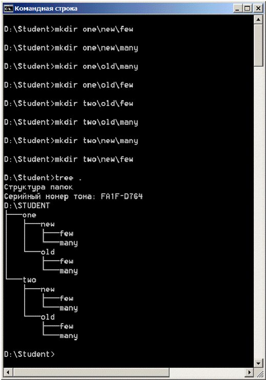

Файлы, каталоги, файловая система - дерево каталогов. Практически вся информация на компьютерах представлена в виде файлов. Файл является основной единицей хранения данных и программ обрабатывающих эти данные. Файл - это именованная (т.е. снабженная именем) область внешней памяти. Обычно файлы временно или постоянно хранятся во внешней памяти компьютера - на дисках, магнитных лентах, "флэшках" и т.д. Кроме имени файлы характеризуются целым рядом атрибутов, таких как размер, время создания и т.п. Операционная система и прикладные программы (приложения) получают доступ к файлу по его имени. Максимальная длина имени файла или каталога в Windows 256 символов, включая расширение, имя и расширение разделяются точкой. Расширение указывает на вид информации или на приложение, которым может быть открыт этот файл, например myfile.txt - текстовый файл, myfile.doc - документ MS Word и т. д.
Дерево каталогов
Файлы хранятся в системе вложенных каталогов (директорий) и организуются в файловую систему. Таким образом, файловой системой называется совокупность файлов и каталогов, организованных в древовидную структуру. Ее можно представить как перевернутое вверх корнем дерево (более точный образ - куст у которого от корня идет сразу множество ветвей, а не один ствол). Узлами, из которых расходятся "ветви", являются каталоги, восходящие, в конечном счете, к корневому каталогу. Узлам, из которых не происходит дальнейшего ветвления, как правило, соответствуют файлы, хотя это могут быть и пустые каталоги (см. дерево ниже). Обычно мы говорим: "Каталог (директория) содержит файлы" или "Файл находится в каталоге". Но при этом понимаем, что каталог не является областью памяти, собственно вмещающей сами файлы. Каталог лишь содержит список файлов, с указанием их имен и других атрибутов. По сути, каталог - это специализированный файл, назначением которого является хранение списка отнесенных к нему файлов (в том числе и подкаталогов, которые, как и все каталоги - тоже файлы). "Пустая" файловая система состоит только из корневого каталога.
Рабочий каталог. Текущий каталог, абсолютный путь и относительный путь.
Когда мы входим в систему, то попадаем в свой рабочий каталог, он задан для нас системным администратором и сами мы его поменять не можем. В момент входа он является так же текущим каталогом. Текущим мы можем сделать любой существующий каталог, к которому у нас есть доступ. Зачем нужен текущий каталог? Дело в том, что операционная система осуществляет доступ к файлу или каталогу через его путевое имя или, попросту путь. Существуют два вида путей, абсолютные и относительные. Абсолютный путь - это последовательность имен каталогов, которая начинается от корневого каталога и, следуя по дереву файловой системы, заканчивается именем каталога или файла, с которым мы хотим работать. Относительный путь может быть указан от текущего или рабочего каталога, что может оказаться значительно короче и удобней, чем использование абсолютного пути. Когда мы находимся в рабочем каталоге, нам не нужно указывать пути к каталагам и файлам находящимся в нем. К другим каталогам придется указать путь, но не абсолютный, а гораздо более короткий. Но об этом немного позднее, а пока приступим к работе.
Первые вопросы после входа в систему
Наш текущий каталог С:\Users\user. Это полный путь от корневого каталога. Читается путь с права на лево, т.е текущий каталог user является подкаталогом Users, расположенном в корневом каталоге, о чем свидетельствует начальный "\".
Полезная функция. Попробуйте понажимать клавиши "ВВЕРХ" и "ВНИЗ" на клавиатуре, и Вы увидите, что командная строка запоминает команды, и этими самыми стрелочками их можно перелистывать и, при необходимости редактировать.
Как видно из примера, имена каталогов при написании пути разделяются символом "\", котрорый называется "обратный слэш". Если путь начинается с "\", то это значит, что указан путь от корневого каталога или полный путь.
Создадим каталог и файл
Для начала перейдем в рабочий каталог студента, который находится на диске D:
Удалим каталог и файл
Смена текущего каталога
Мы научились создавать и удалять каталоги, теперь научимся в них заходить и выходить обратно. Поскольку наша текущая директория пуста, то каталоги придется создавать снова.
Вот, в принципе, мы и освоили набор команд, позволяющий построить нам дерево каталогов. Создав каталог firstcat, мы можем создать в нем столько каталогов, сколько потребуется, с любой степенью вложенности. Создаем - md, смотрим - dir, меняем текущий каталог - cd, удаляем, если ошиблись - rd. Давайте в последний раз удалим наш многострадальный firstcat (кто забыл, отмотайте назад) и приступим к построению дерева каталогов, паралельно изучая новые команды и возможности.
Начинаем строить дерево
Рекомендуем перерисовать построенное дерево на бумагу, чтобы постоянно видеть его перед собой
Несколько команд mkdir и дерево готово
Помимо команды md в Windows для создания каталогов можно воспользоваться командой mkdir, она удобна тем, что позволяет создавать цепочки вложенных каталогов:
Работаем с относительными путями. Команда cd
Для удобства работы положите лист с нарисованным деревом перед собой.
При работе с относительными путями есть один весьма существенный момент. Посмотрите на дерево: если мы движемся от корня, то на каждой развилке обязательно должны указать имя очередного каталога, поскольку каждый каталог разветвляется на несколько, и у каждого есть свое имя. Когда мы движемся к корню, мы не указываем имени каталога, поскольку каталог, в который мы можем попасть - единственный, вариантов нет. Поэтому вместо имени указывается ".." (точка,точка).Имена каталогов в путях, даже если это ".." разделяются \ (обратный слэш).
Создание и просмотр текстовых файлов.
А теперь самостоятельно создайте:
Копирование файлов.
Копирование файлов осуществляется командой copy что куда. Где "что" и "куда" суть имена файлов, с указанием пути к ним. Для текущей директории путь, естественно, указывать не нужно.
Мы будем копировать файлы papavas в каталог two, он должен быть пустой, поэтому удалите из него все каталоги и приступим:
Копируем файл papavas1 в two не изменяя имени файла
Файлы papavas2, papavas3 и papavas4 скопируйте в two самостоятельно.
После этого создайте еще один каталог в папке студент и назавите его first. у нас должно получиться дерево:
Перемещение файлов.
Перемещение файлов осуществляется командой move что куда. Где "что" и "куда" суть имена файлов, с указанием пути к ним. В отличие от копирования файл "что" удаляется. в остальном действуют те же правила, что и для команды копирования.
Перемещаем файл papavas1 из каталога two в каталог first с именем pv1
Переходим в каталог first и перемещаем файл papavas2 из two в first с тем же именем
Переименовываем файл papavas2 в pv2
Переместите файлы papavas3 и papavas4 из каталога two в каталог one с именами pv3 и pv4, предъявите результат преподавателю